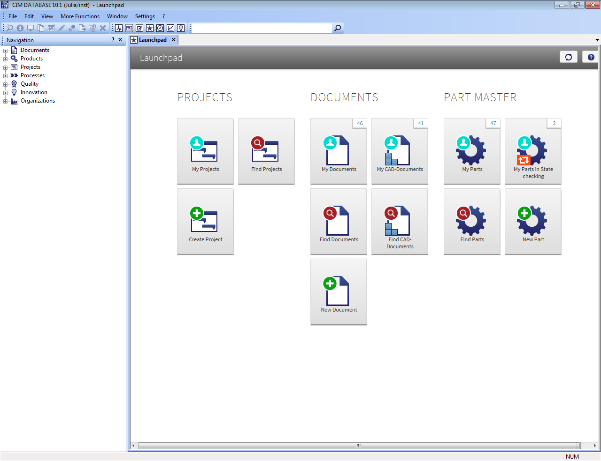

Introduction¶
The following actions can be defined via clickable thumbnails:
Object-based search dialogs for projects, documents and parts
Hit lists for separate projects, documents and parts. The number of hits is shown in the thumbnail on the top right.
Creating projects, documents and parts

The CONTACT Launchpad